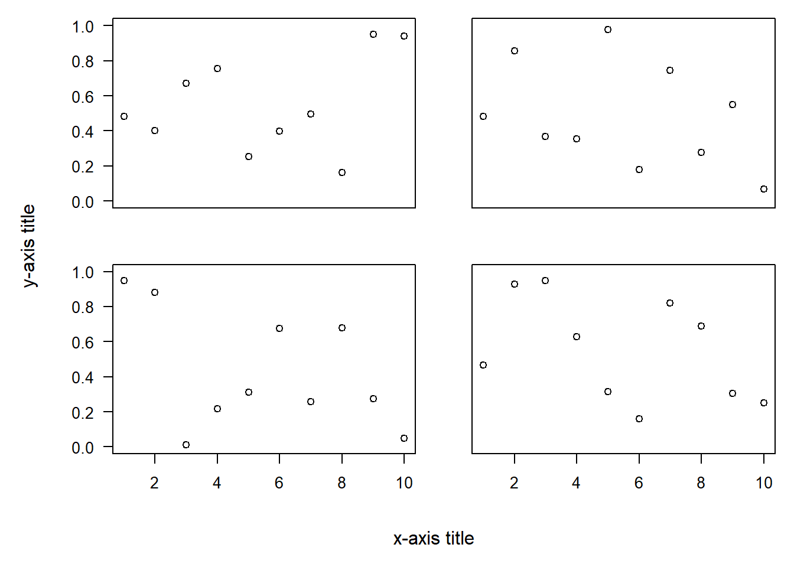
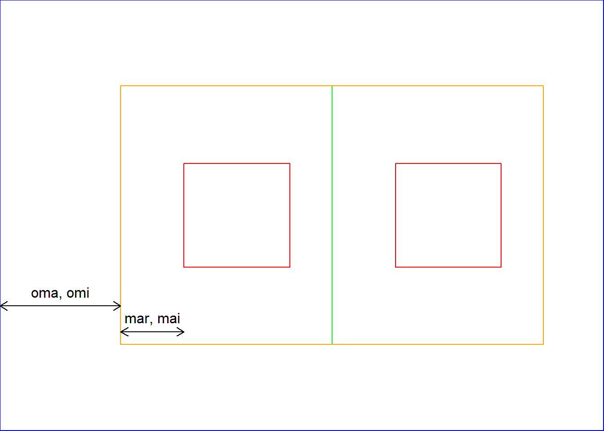
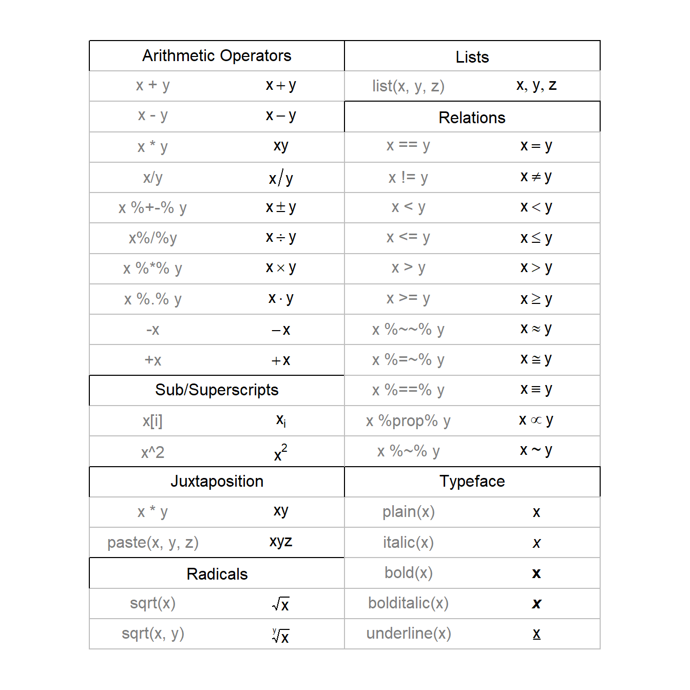
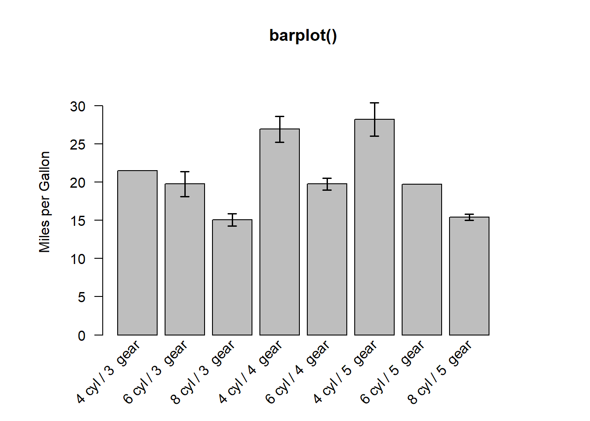
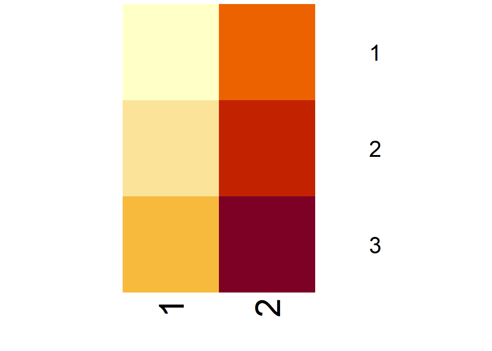
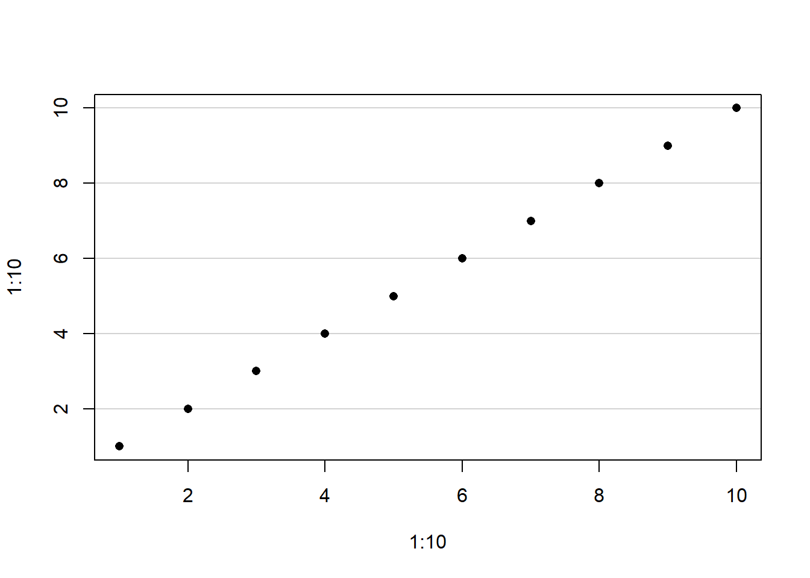
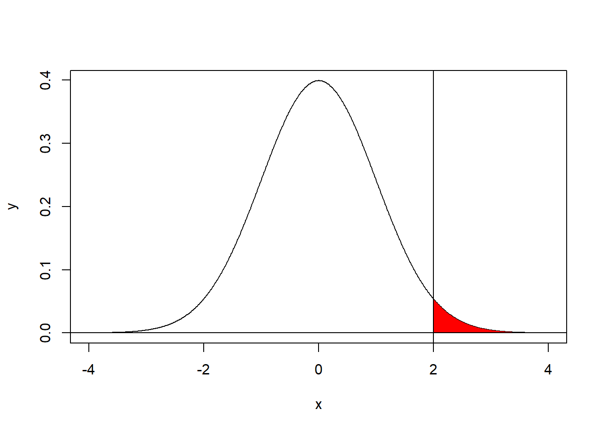
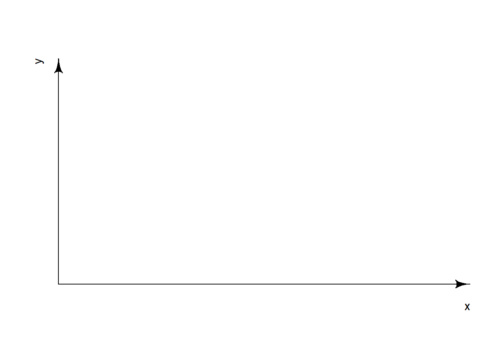

Chapter 18 Base graphics
18.1 Graphical parameters par()
Good overviews:
- Official Documentation
- Illustrated Documentation
- Book R in a Nutshell: A Desktop Quick Reference
18.1.1 Set graphical parameters
Change global option
par(xlog = TRUE)change for local plot
plot(..., xlog = TRUE)When parameters are set, their previous values are returned in an invisible named list. Such a list can be passed as an argument to par to restore the parameter values.
opar <- par(xlog = TRUE)
plot(...)
par(opar)reset default
dev.off()check current parameter
par("xlog")## [1] FALSEThe parameters are defined for the currently active device
- Normally the Rstudio plot panel
- If
png()orpdf()opend ⇒ only within this document dev.off()closes device and resetpar()- If
png()orpdf()⇒ the sameparare active as they were before the devicepng()orpdf()was opend - If Rstudio panel ⇒ the default
parare active
- If
18.1.3 Device
par("ask") # asks user before new figure is drawn
## [1] FALSE
par("new") # if TRUE, plots next high-level plot above previous
## [1] FALSE
18.1.5 Coordinate sytem
There are in total 9 coordinate sytems
- absolute
- \((0,0)\) in lower left device corner
inchescan be converted to cm with functioncm()deviceusually in pixels (png) or points (pdf)linesbased onmex(relative to font size)charsbased oncex(font size)
- \((0,0)\) depend on what is plotted
useruser coordinates
- \((0,0)\) in lower left device corner
- normalized
ndcnormalized device coordinatesnicnormalized inner region coordinatesnfcnormalized figure coordinatesnpcnormalized plot coordinates
![Interval [0, 1] for different normalized coordinate systems](R_Ref_Book_files/figure-html/unnamed-chunk-93-1.png)
Figure 18.1: Interval [0, 1] for different normalized coordinate systems
18.1.6 Define device regions
Useful links: Device regions, fig and fin, oma and mgp
18.1.6.1 Split device
Several options (see here)
- array:
par(mfrow = c(2,2))(mfcolfills the array by columns)- use
par("mfg")to plot a specific field in the array
- use
- grid:
layout(matrix()) - arbitrary locations:
par(fig = ...)combined withpar(new=TRUE) split.screen()pairs()coplot()
Example for copy paste
par(mfrow = c(2, 2)) # 2-by-2 grid of plots
par(oma = c(4, 4, 0, 0)) # make room (i.e. the 4's) for the overall x and y axis titles
par(mar = c(2, 2, 1, 1)) # make the plots be closer together
# now plot the graphs with the appropriate axes removed (via xaxt and yaxt),
# remove axis labels (so that they are not redundant with overall labels,
# and set some other nice choices for graphics parameters
plot(runif(10), xlab = '', ylab = '', xaxt = 'n', las = 1, ylim = c(0, 1))
plot(runif(10), xlab = '', ylab = '', xaxt = 'n', yaxt = 'n', ylim = c(0, 1))
plot(runif(10), xlab = '', ylab = '', las = 1, ylim = c(0, 1))
plot(runif(10), xlab = '', ylab = '', yaxt = 'n', ylim = c(0, 1))
# print the overall labels
mtext('x-axis title', side = 1, outer = TRUE, line = 2)
mtext('y-axis title', side = 2, outer = TRUE, line = 2)
Useful helper function
FunNewPar <- function(oma = c(0,0,2,2),
mar = c(4,4,0,0),
tcl = -0.3,
mgp = c(2,0.5,0),
cex.axis = 0.7,
ps = 10,
xpd = NA){
x <- par(oma = oma,
mar = mar,
tcl = tcl,
mgp = mgp,
cex.axis = cex.axis,
ps = ps,
xpd = xpd)
invisible(x)
}Multiple plots with everything
FunNewPar()Multiple plots without axis title
FunNewPar(oma = c(1,1,2,2),
mar = c(3,3,0,0))Multiple plots without axis
FunNewPar(oma = c(3,3,2,2),
mar = c(1,1,0,0))

18.1.6.2 Margins
Define margine area using lines coordinate system
par("oma") # Outer Margin Area
## [1] 0 0 0 0
par("mar") # Margine Area
## [1] 5.1 4.1 4.1 2.1Define margine area using inches coordinate system
par("omi") # Outer Margin Area
## [1] 0 0 0 0
par("mai") # Margine Area
## [1] 1.02 0.82 0.82 0.42
Define margine area using ndc/nfc coordinate system
par("omd") # Start and endpoint of inner region c(x1, x2, y1, y2)
## [1] 0 1 0 1
par("fig") # Start and endpoint of figure region c(x1, x2, y1, y2)
## [1] 0 1 0 1
par("plt") # Start and endpoint of plot region c(x1, x2, y1, y2)
## [1] 0.1171429 0.9400000 0.2040000 0.8360000
Define region dimensions in inches
par("fin") # Figure dimensions, (width, height)
## [1] 6.999999 4.999999
par("pin") # Plot dimensions, (width, height)
## [1] 5.759999 3.159999
18.1.7 User coordinates limits
par("usr") # extremes of the user coordinate system (xmin, xmax, ymin, ymax)
## [1] 0 1 0 1
par("xaxs") # "r": xlim +/- 4%, "i": xlim
## [1] "r"18.1.8 General appearence
par("bg") # color for the background of the device region. NA => transparent
## [1] "white"
par("fg") # color for the foreground (axes, boxes, plotting)
## [1] "black"18.1.9 Symbols
par("pch") # symbol
## [1] 1
par("cex") # magnifies text/symbols relative to default
## [1] 1
par("col") # symbol color
## [1] "black"18.1.10 Lines
par("lty") # line type
## [1] "solid"
par("lwd") # line width
## [1] 1
par("col") # line color
## [1] "black"
par("lend") # line end type
## [1] "round"
par("ljoin") # line join style
## [1] "round"
par("lmitre") # detail to ljoin option "mitre"
## [1] 10

18.1.11 Text
par("font") # text font
## [1] 1
par("family") # text font family
## [1] ""
par("cex") # magnifies text/symbols relative to default
## [1] 1
par("ps") # text pointsize
## [1] 12
par("col") # text color
## [1] "black"
par("srt") # string rotation in degrees (°)
## [1] 0
par("lheight") # vertical spacing in multi-line text
## [1] 1Point size of text = ps * cex
Point size of title = ps * cex * cex.main
Size of “lines” (coordinate system) = constant * cex * mex


Get new text families with packet extrafont (see here)
windowsFonts(MyFont = windowsFont("NameFromWord")), however with this way the new font cannot be printed to PDF.
18.1.12 Axis labels
par("font.lab")
## [1] 1
par("cex.lab")
## [1] 1
par("col.lab")
## [1] "black"
par("ann") # should there be any annotations (title, axis title)
## [1] TRUE
par("adj") # axis title position (0: left, 1: right)
## [1] 0.5
par("mgp") # position of 1) labels, 2) tick-mark labels, 3) tick marks (in lines)
## [1] 3 1 018.1.13 Axis
par("font.axis")
## [1] 1
par("cex.axis")
## [1] 1
par("col.axis")
## [1] "black"
par("xaxt") # should there be an axis ("n" suppresses axis)
## [1] "s"
par("las") # orientation of tick-mark labels (0: parallel, 1: horizontal, 2: perpendicular, 3: vertical)
## [1] 0
par("mgp") # position of 1) labels, 2) tick-mark labels, 3) tick marks (in lines)
## [1] 3 1 018.1.14 Ticks
par("mgp") # position of 1) labels, 2) tick-mark labels, 3) tick marks (in lines)
## [1] 3 1 0
par("tck") # length of tick marks (in npc), 1 => grid lines
## [1] NA
par("tcl") # length of tick marks (in chars), negative => look outside plot
## [1] -0.5
par("lab") # ≈ number of ticks per axis (x-axis, y-axis, unimplementent)
## [1] 5 5 7
par("xaxp") # look where ticks are plotted (lower xlim, upper xlim, nr of ticks minus 1)
## [1] 0 1 5
par("xaxs") # "r": xlim +/- 4%, "i": xlim
## [1] "r"
par("xlog") # log x axis
## [1] FALSE18.1.16 Title
par("font.main")
## [1] 2
par("cex.main")
## [1] 1.2
par("col.main")
## [1] "black"
par("font.sub")
## [1] 1
par("cex.sub")
## [1] 1
par("col.sub")
## [1] "black"
par("ann") # should there be any annotations (title, axis title)
## [1] TRUE18.1.17 R.O. (Read only)
par("cin") # character size (width, height) in inches
## [1] 0.15 0.20
par("cra") # character size (width, height) in pixels
## [1] 28.8 38.4
par("csi") # same as par("cin")[2]
## [1] 0.2
par("cxy") # character size (width, height) in user coordinate system
## [1] 0.02604167 0.06329115
par("din") # device dimensions (width, height) in inches
## [1] 6.999999 4.999999
par("page") # A boolean value indicating whether the next call to plot.new is going to start a new page
## [1] TRUE18.2 Graphics Size and Resolution
18.2.1 Terminology
- Point (typography) Unit of length in typography. 1 point = \(1/72\) inch \(\approx\) 0.353 mm.
- Typically, font size and size of spaces are defined in unit “pointsize”
- Pixels per inch (ppi) measurement of pixel density
18.2.2 Devices
pdf()width/height- By default 7 inches
- Are always specified in inches. No
unitargument. - To specify in cm use function
cm()which converts from cm to inches.
- No resolution argument necessary (vector graphic)
png()width/height- By default 480 units (by default pixels)
unitargument changes unit (px,in,cm,mm)
- Resolution: See below
18.2.3 Resolution and Font Size with png
Depends if height/width is specified in pixels or in length
unit = "px"(NOT recommended)resby default 72 ppi if not specified otherwise- pixels \(\xrightarrow{\text{ppi}}\) inches
- Changing
reswill also change the font size (relative to image dimensions)! Reason:pointsizeis defined in inches and inches are defined viappi.
height/widthnot specified in pixelsreshas to be specified (NO default value)- pixels \(\xleftarrow{\text{ppi}}\) inches
- Changing the
reshas no effect on font size (relative to image dimensions)
# default: width = 480, height = 480, units = "px", pointsize = 12, res = 72
png("TestPlot.png")
plot(1:10)
dev.off()
# change only `res`
png("TestPlot.png", res = 30)
plot(1:10)
dev.off()
## font size (relative to image dimensions) very small now
png("TestPlot.png", width = 17, height = 17, units = "cm", res = 200)
plot(1:10)
dev.off()
## now the font size is defined relative to the image dimensions
## Changing the `res` will not change the font size
png("TestPlot.png", width = 17, height = 17, units = "cm", res = 300)
plot(1:10)
dev.off()
## you can still change the font size with the argument `pointsize`
png("TestPlot.png", width = 17, height = 17, units = "cm", res = 300, pointsize = 24)
plot(1:10)
dev.off()18.3 Colors
Very well explained here
Specify by:
- Name
- example
col = "black" - possible names:
colors()
- example
- Hexadecimal RGB code
- example
col = "#000000"=> black - format
"#RRGGBB" - RR, GG, BB are hexadecimal digits (00 to FF)
- example
- Index
- example
col = 1=> black - index gives colors position in
palette() palette()can be manipulated- restore default palette with
palette("default")
- restore default palette with
- Special: index 0 is background color
- example
Default palette:

Change palette
mycols <- gray.colors(n = 4, start = 0, end = 0.8)
palette(mycols) # change palette
plot(..., col = 1:4) # make plots using indices for colors
palette("default") # restore default palette18.4 Mathematical annotation
Useful helpfile: Mathematical annotation in R
If the text argument to one of the text-drawing functions (text, mtext, axis, legend, title) in R is an expression, the argument is interpreted as a mathematical expression and the output will be formatted according to TeX-like rules.
Functions to create objects of mode “expression”
expression()bquote()- same as
expression()but variables/terms wrapped in.()are evaluated
- same as
Importand special symbols in expressions
*connects two parts without a space~connects two parts with space^superscript[]subscript
An extensive overview can be found in the following tables. The columns of grey text show sample R expressions, and the columns of black text show the resulting output.


18.5 High level plots
Links:
Common high level plot functions
- 1D continuous
curve()hist()stripchart()dotchart()beeswarm::beeswarm()
- 1D discrete
barplot()spineplot()pie()
- 2D continuous - continuous
plot.default()scatter.smooth()matplot()pairs()
- 2D continuous - discrete
boxplot()stripchart()dotchart()barplot()beeswarm::beeswarm()spineplot()pie()
- 2D discrete - discrete
mosaicplot()/vcd::mosaic()
- 3D
contour()filled.contour()image()persp()rgl::plot3d()
- ANOVA
interaction.plot()plot.design()
- Multivariate
pairs()GGally::ggpairs()- Bubble Plot
coplot()stars()mosaicplot()
- Distribution
qqplot()
- Interactive
identify()- plot.ly (interactive plots)
- shiny (interactive web apps)


18.5.2 Example: Barplot
myData <- aggregate(mtcars$mpg,
by = list(cyl = mtcars$cyl, gears = mtcars$gear),
FUN = function(x) c(mean = mean(x), sd = sd(x),
n = length(x)))
myData <- do.call(data.frame, myData)
myData$se <- myData$x.sd / sqrt(myData$x.n)
colnames(myData) <- c("cyl", "gears", "mean", "sd", "n", "se")
myData$names <- c(paste(myData$cyl, "cyl /", myData$gears, " gear"))
par(mar = c(5, 6, 4, 5) + 0.1)
plotTop <- max(myData$mean) +
myData[myData$mean == max(myData$mean), 6] * 3
barCenters <- barplot(height = myData$mean,
names.arg = myData$names,
beside = true, las = 2,
ylim = c(0, plotTop),
cex.names = 0.75, xaxt = "n",
main = "barplot()",
ylab = "Miles per Gallon",
border = "black", axes = TRUE)
text(x = barCenters, y = par("usr")[3] - 1, srt = 45,
adj = 1, labels = myData$names, xpd = TRUE)
arrows(barCenters, myData$mean - myData$se, barCenters,
myData$mean + myData$se, lwd = 1.5, angle = 90,
code = 3, length = 0.05)
18.5.3 Example: Matplot
den.df <- 2:20
num.df <- 2:20
mq <- matrix(0, nrow = length(den.df), ncol = length(num.df))
for(i in seq_along(den.df)){
mq[i,] <- qf(0.95, num.df, den.df[i])
}
## den.df: x coordinates of lines (recycled in this case)
## mq: y coordinates of lines, here: matrix
## each column give y coordinate of one line
matplot(den.df, mq, type = "l", xlab = "den.df", ylab = "95%-quantile")18.5.4 Example: image and contour plot
Be careful with image() and contour(). There are different conventions for mapping the matrix indices \((i, j)\) to the spatial coordinates \((x, y)\).
- Cartesian convention
- matrix is transposed
- rows of matrix end up on x axis
- columns on y axis
- columns are flipped (first column is at bottom)
- European reading order
- Matrix plotted as it would also be written down
For details see Baddeley, Rubak, and Turner (2016, chap. 3.6.3)
(m <- matrix(1:6, 3, 2))## [,1] [,2]
## [1,] 1 4
## [2,] 2 5
## [3,] 3 6image(z = m)
text(x = rep(0:2/2, 2), y = rep(0:1, each = 3))
contour(z = m, levels = 1:6, add = TRUE)
For European reading order first rotate matrix using t(m[nrow(m):1,,drop=FALSE]) (see here)
image(t(m[nrow(m):1,,drop=FALSE]))
text(x = rep(0:1, each = 3), y = rep(2:0/2, 2))
or use heatmap()
heatmap(x = m, Rowv = NA, Colv = NA, revC = TRUE, asp = 1, scale = "none")
Example: visualize polynomial regression model with two predictors
library(MASS)
fit <- lm(loss ~ tens + I(hard * tens) + I(hard^2) + I(tens^2) + I(hard^2 * tens) + I(tens^3) + I(hard^3), data = Rubber)
reso <- 100
x1_range <- range(Rubber$hard)
x2_range <- range(Rubber$tens)
x1 <- seq(x1_range[1], x1_range[2], length.out = 100)
x2 <- seq(x2_range[1], x2_range[2], length.out = 100)
grid <- expand.grid(hard = x1, tens = x2)
grid$y <- predict(object = fit, newdata = grid)
image(x = x1, y = x2, z = matrix(grid$y, reso, reso))
contour(x = x1, y = x2, z = matrix(grid$y, reso, reso), xlab = "", add = TRUE)
## easier lattice::contourplot() allows formula method (no matrix necessary)
lattice::contourplot(y ~ hard + tens, data = grid, main = "lattice::contourplot()")
18.6 Low level plots
- Points
-
points() - Lines
lines()(connect several points)segments()(connect pairs of points)arrows()curve()abline()
- Bodies
rect()polygon()symbols()
- Text
text()mtext()legend()title()
- Plot elements
axis()box()
- Add-ons
grid()grid behind plotrug()small ticks at bottom of e.g.hist()axis.break()plotrix::axis.break()break of axis
strwidth(). Returns width or height of strings in user coordinates.


18.6.3 panel.first
plot something behind actual plot
plot(1:10,1:10, pch = 16,
panel.first = abline(h = seq(2,10,2),
col = "lightgray"))
18.6.4 Area under curve
x <- seq(-4,4,0.01)
y <- dnorm(x)
plot(y ~ x, type = "l")
upper_bond <- 4
lower_bond <- 2
auswahl <- x <= upper_bond & x >= lower_bond
x_polygon <- x[auswahl]
y_polygon <- y[auswahl]
polygon(c(lower_bond, x_polygon, upper_bond),
c(0, y_polygon, 0),
col = "red", border = NA)
abline(h = 0)
abline(v = 2)
18.7 Plot Math Coordinate System
mathplot <- function(xlim = c(0,1), ylim = c(0,1), xlab = "x", ylab = "y"){
opar <- par(xaxs = "i", yaxs = "i") # no +- 4%
plot.new()
plot.window(xlim = xlim, ylim = ylim)
u <- par("usr")
shape::Arrows(u[1], u[3], u[2], u[3], arr.adj = 1, xpd = TRUE)
shape::Arrows(u[1], u[3], u[1], u[4], arr.adj = 1, xpd = TRUE)
shape::Arrows(u[1], u[3], u[2], u[3], arr.adj = 1, xpd = TRUE)
shape::Arrows(u[1], u[3], u[1], u[4], arr.adj = 1, xpd = TRUE)
mtext(text = xlab, side = 1, line = 1, adj = 1)
mtext(text = ylab, side = 2, line = 1, adj = 1)
par(opar)
}
mathplot()